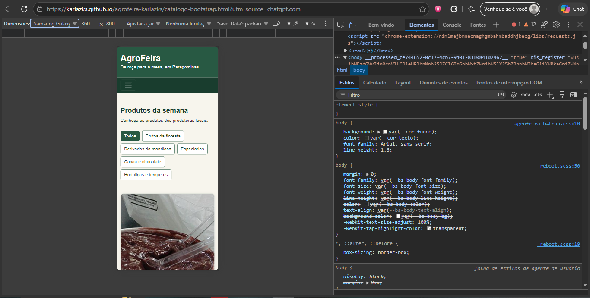
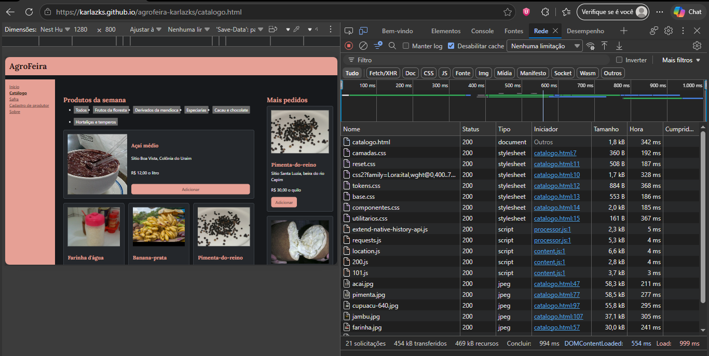
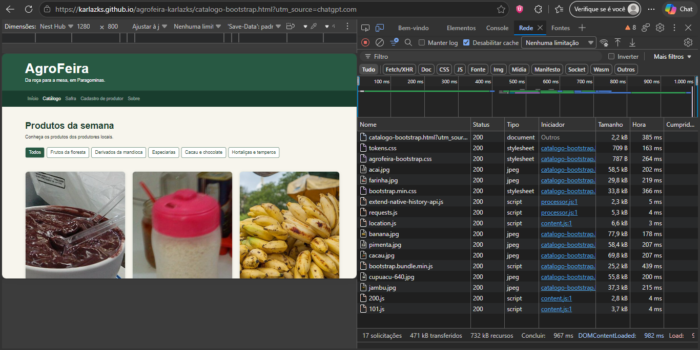
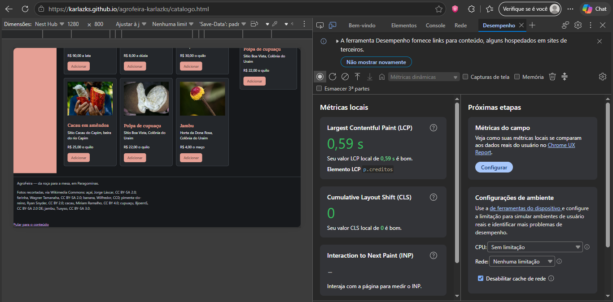
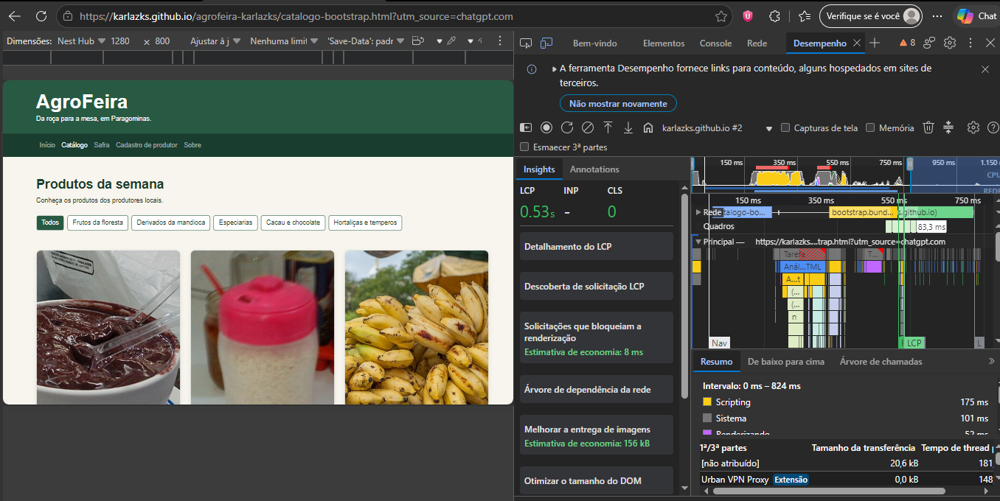

Comparativo: o catálogo autoral e o catálogo em Bootstrap
Aluna: Karla Geovanna Almeida de Sousa. Matrícula: [Sua Matrícula]
Repositório: https://github.com/karlazks/agrofeira-karlazks
Endereços do site:
- Catálogo autoral: https://karlazks.github.io/agrofeira-karlazks/catalogo.html
- Catálogo em Bootstrap: https://karlazks.github.io/agrofeira-karlazks/catalogo-bootstrap.html
0 catálogo em três larguras
Em 360 px, o catálogo em Bootstrap apresenta 1 coluna de cartões, a lista "Mais pedidos" não aparece e o teste de rolagem retornou false. Em 768 px, há 2 colunas de cartões, a lista "Mais pedidos" não aparece e o teste de rolagem retornou false. Em 1200 px, há 3 colunas de cartões, a lista "Mais pedidos" aparece à direita e o teste de rolagem retornou false.


1. A customização
| Variável alterada | Valor (Token) | Por quê |
|---|---|---|
| --bs-body-bg | var(--cor-fundo) | Muda o fundo da página, dos cartões e da lista "Mais pedidos" de branco para a cor do projeto. |
| --bs-body-color | var(--cor-texto) | Altera a cor padrão do texto do corpo de cinza-escuro para a cor definida no projeto. |
| --bs-link-color-rgb e --bs-link-hover-color-rgb | var(--cor-marca-rgb) e var(--cor-marca-forte-rgb) | Muda a cor do link "Início" de azul para a cor da marca e sua variação no hover. |
| --bs-border-radius | var(--raio) | Altera os cantos arredondados padrão (0.375rem) do cartão, do alerta e do botão. |
| --bs-btn-bg, --bs-btn-border-color | var(--cor-marca) | Muda o fundo e a borda do botão "Adicionar" de azul para a cor da marca. |
| --bs-btn-hover-bg, --bs-btn-hover-border-color | var(--cor-marca-forte) | Altera a cor do botão quando o ponteiro do mouse passa por cima. |
| --bs-btn-color | var(--cor-sobre-marca) | Garante que o texto do botão seja legível (branco) nos estados normal, hover e ativo. |
Por que a --bs-primary sozinha, no :root, não muda o botão: No F12, ao inspecionar o botão (Captura 3), vimos que a regra .btn-primary define as próprias variáveis locais, como --bs-btn-bg: #0d6efd. O botão lê essa variável local com valor fixo, e não a variável global --bs-primary do :root. Por isso, alterar apenas a primária não reflete no botão sem sobrescrever a variável específica dele.

O antes e o depois: Comparando a Captura 2 (antes) com a Captura 4 (depois), quatro coisas mudaram:
- O fundo da página passou de branco para
--cor-fundoe a cor do texto mudou. - O botão Adicionar passou de azul (
#0d6efd) para--cor-marca, e no hover para--cor-marca-forte. - O link "Início" passou de azul (
#0d6efd) para--cor-marca. - Os cantos do cartão, do alerta e do botão passaram de
0.375rem(6 px) para o valor de--raio.

2. As medições
As medições foram realizadas no Chrome, nos endereços públicos, com as caixas Disable cache (aba Network) e Disable network cache (aba Performance) marcadas. A largura e a altura da área da página, obtidas via Console, foram de 800 × 1280 px para ambas as páginas.
| Critério | Autoral | Bootstrap |
|---|---|---|
| CSS transferido | 14,0 kB (inclui 1,6 kB do Google Fonts) | 35,3 kB (33,8 + 0,7 + 0,8 kB) |
| Fontes | 38,3 kB | 0 kB |
| Imagens | 390 kB | 388 kB |
| Documento HTML | 8,5 kB | 2,4 kB |
| Total transferido | 472 kB (inclui favicon) | 476 kB (inclui favicon) |
| LCP (valor do meio) | 0,53 s (0,51; 0,66; 0,35; 0,53; 0,55 s) | 0,68 s (1,80; 0,64; 0,69; 0,68; 0,45 s) |
| Linhas de CSS próprio | 483 (1 + 44 + 41 + 60 + 335 + 2) | 156 (41 + 115) |
| Classes no cartão do açaí | 7 elementos; 4 classes | 8 elementos; 16 classes (sem o selo) / 19 (com o selo) |




3. A leitura dos números
Os bytes. O Bootstrap transferiu 35,3 kB de CSS, contra 14,0 kB da versão autoral. Isso significa que o framework baixou cerca de 2,5 vezes mais CSS. Se desconsiderarmos a folha do Google Fonts (1,6 kB) do lado autoral, a diferença é ainda maior: o Bootstrap é cerca de 2,8 vezes mais pesado em CSS. Entretanto, o total transferido da página foi praticamente o mesmo (472 kB contra 476 kB) porque as fotos dos produtos são idênticas e dominam o peso. A diferença real no total é que o autoral carrega fontes (38,3 kB) e o Bootstrap não.
O LCP. O valor do meio para a página autoral foi 0,53 s, contra 0,68 s da página em Bootstrap. A variação entre a maior e a menor carga no autoral foi de 0,31 s (0,66 - 0,35) e no Bootstrap foi de 1,35 s (1,80 - 0,45). A diferença entre os dois valores medianos (0,15 s) é menor que a própria variação das cargas, o que significa que os números são próximos demais para afirmar categoricamente qual é mais rápido, pois o LCP mede a página inteira. Além disso, o catálogo autoral baixa fontes do Google e o Bootstrap não, o que influencia a métrica.
As linhas e as classes. O CSS autoral tem 483 linhas, contra 156 do Bootstrap. O autor escreveu mais CSS, mas o HTML do Bootstrap precisou de muito mais classes no cartão (16 contra 4). O trabalho de mudar uma decisão global (como a cor do botão) no autoral mora no arquivo de tokens (mudar uma linha); no Bootstrap, mora em aprender o sistema de variáveis para sobrescrever as regras. O total autoral inclui regras de outras páginas no componentes.css (como a barra de busca e a tabela de safra), que o catálogo não usa, enquanto o Bootstrap serve apenas a esta página.
O que a medição não mostra. Os números não revelam o esforço de manutenção futuro, a facilidade de criar novos componentes ou o tempo gasto para personalizar o framework. Também não medem acessibilidade. A contagem de requisições não serve como critério de comparação, pois ter muitas requisições pequenas (Bootstrap) ou poucas e grandes (autoral) não reflete diretamente a experiência do usuário ou o peso real da página.
Controle e trabalho. A versão autoral tinha o link de pular, o menu responsivo, a barra de categorias, a container query do cartão e a regra :has() para o foco. Para criar cada um deles, foi necessário escrever o CSS do zero (o menu e a barra exigiram várias linhas no componentes.css). O Bootstrap não traz esses recursos prontos do jeito que o projeto precisava. Para aplicar as cores da marca no Bootstrap, foi necessário entender como as variáveis CSS do framework funcionam (Parte B). Além disso, o Bootstrap decide seus próprios breakpoints e unidades, o que limita o controle fino do layout que tínhamos no CSS autoral.
4. Conclusão
Usaria o Bootstrap em um projeto novo onde a prioridade fosse reduzir o CSS próprio (que caiu de 483 para 156 linhas) e a equipe já dominasse o framework; não usaria em um projeto que exige controle minucioso de layout e máxima performance, pois o CSS transferido foi de 14,0 kB no autoral contra 35,3 kB no Bootstrap.